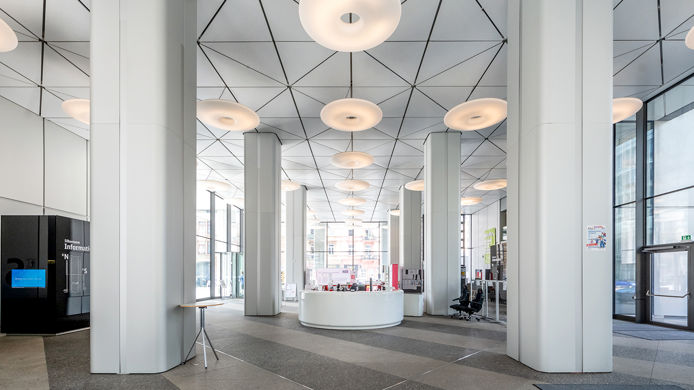
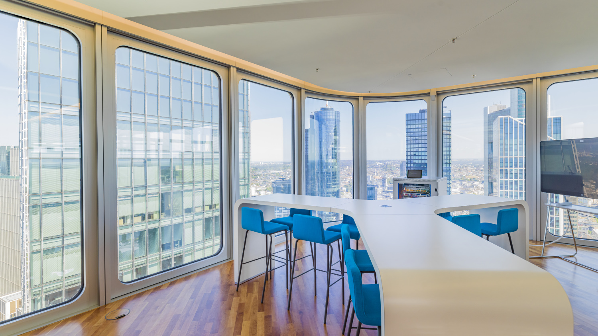
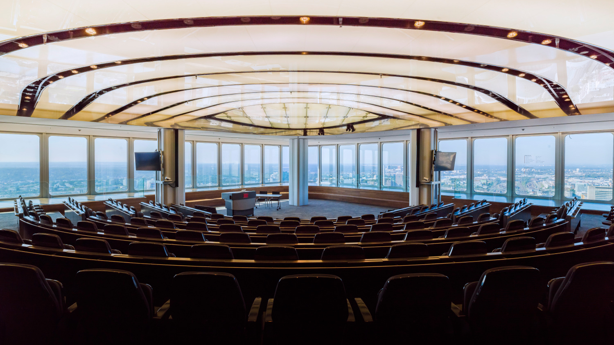

Viele Wege.
Ein Ziel: der Silberturm.
Architektur

lobby

Büroräume

Auditorium
Aufwärts
Atemberaubende Sicht auf Frankfurts Bahnhofsviertel

Wählen Sie ihren Ausblick:
Abwärts
Zu Fuß durch Frankfurts Bahnhofs & Bankenviertel.
Der Silberturm in Frankfurt am Main befindet sich in zentraler Lage im bekannten Bankenviertel, am Jürgen‑Ponto‑Platz 1.
Nur wenige Gehminuten vom Frankfurter Hauptbahnhof entfernt, ist das Hochhaus hervorragend erreichbar – sowohl zu Fuß als auch mit öffentlichen Verkehrsmitteln.
Die Nähe zur Taunusanlage, zum Mainufer sowie zu wichtigen Straßen wie der Kaiserstraße und der Taunusstraße macht den Standort besonders attraktiv.
Auch kulturelle Highlights wie die Alte Oper oder das Städel Museum befinden sich in unmittelbarer Umgebung.
Dank seiner zentralen Lage und der optimalen Anbindung an S‑Bahn, U‑Bahn und Straßenbahn zählt der Silberturm zu den wichtigsten Bürostandorten in Frankfurt und ist ein markanter Bestandteil der Frankfurter Skyline.